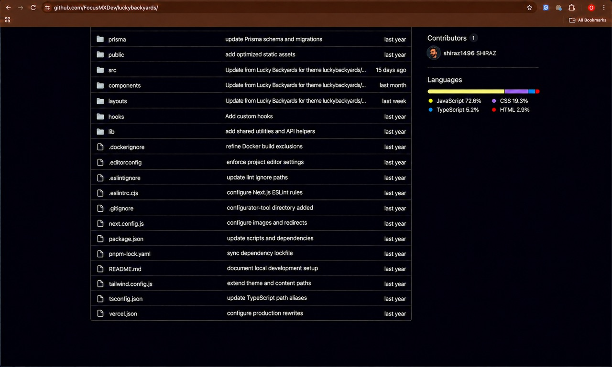
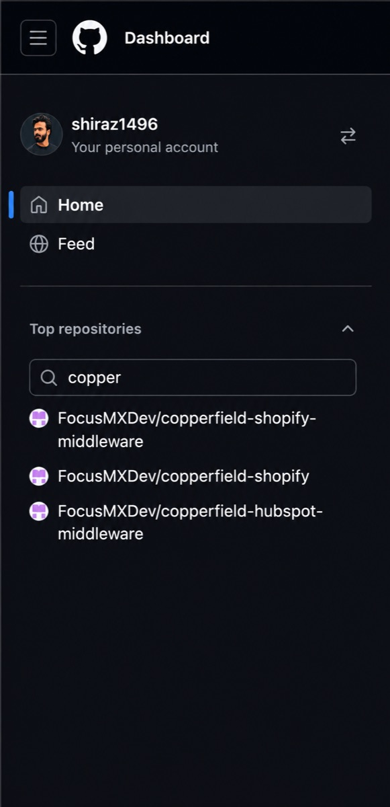
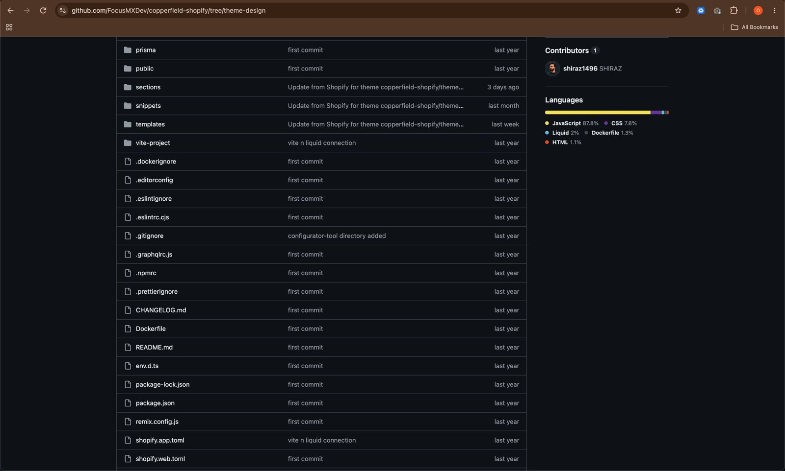
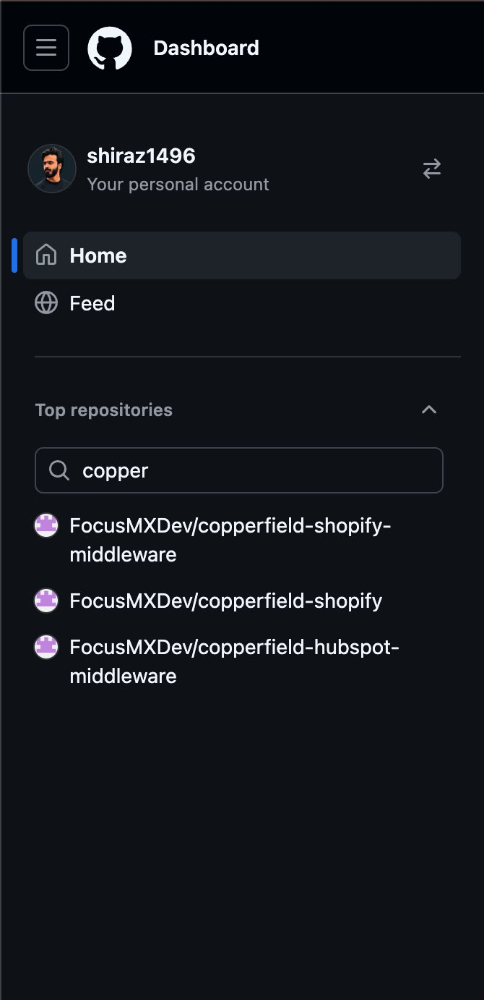
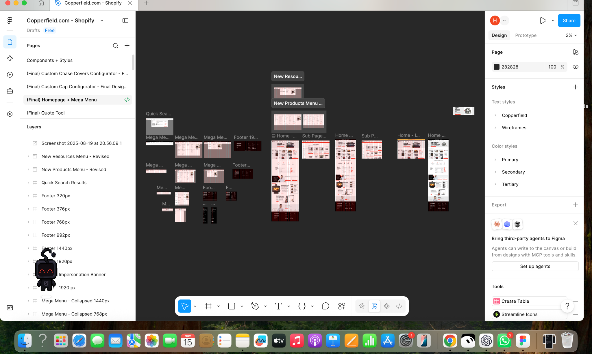
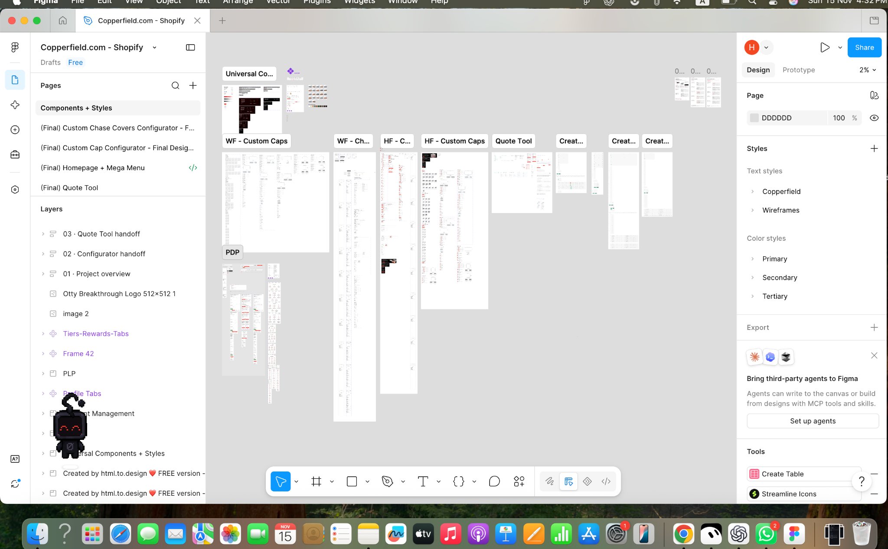
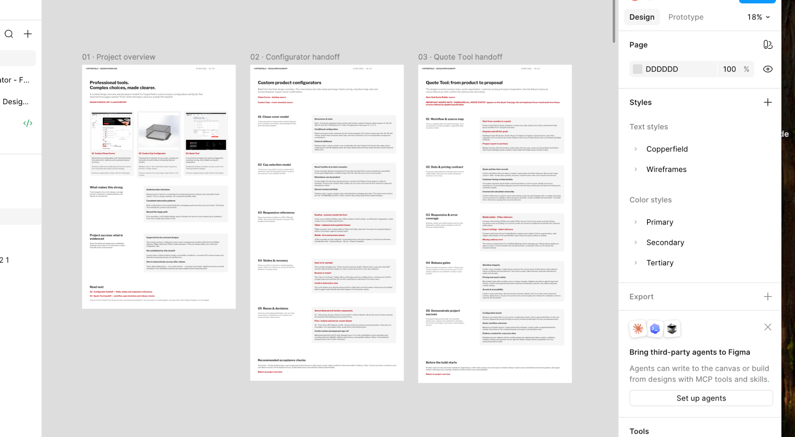
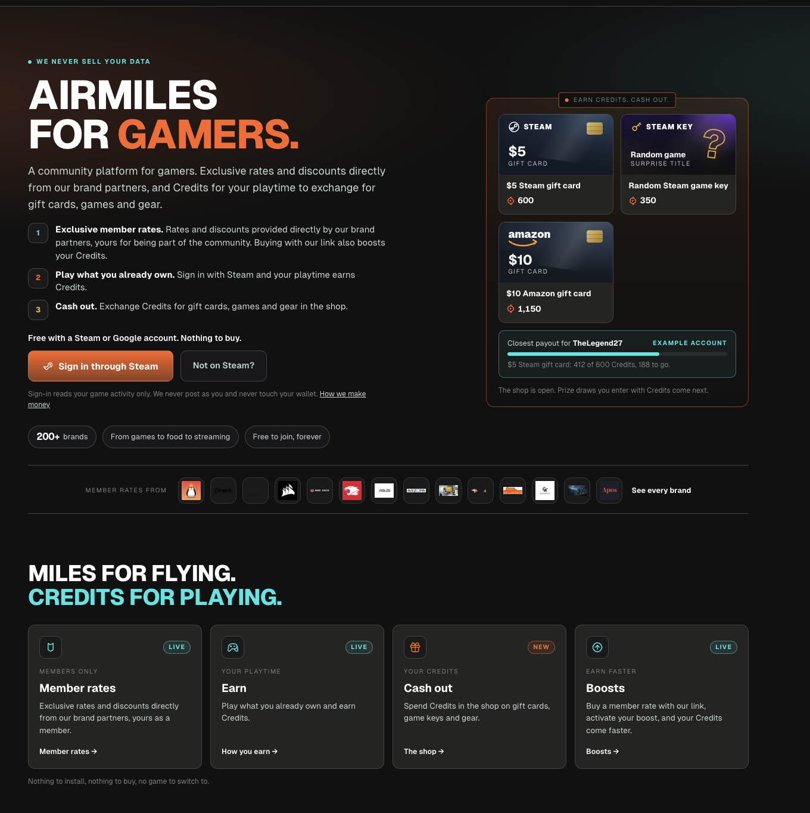
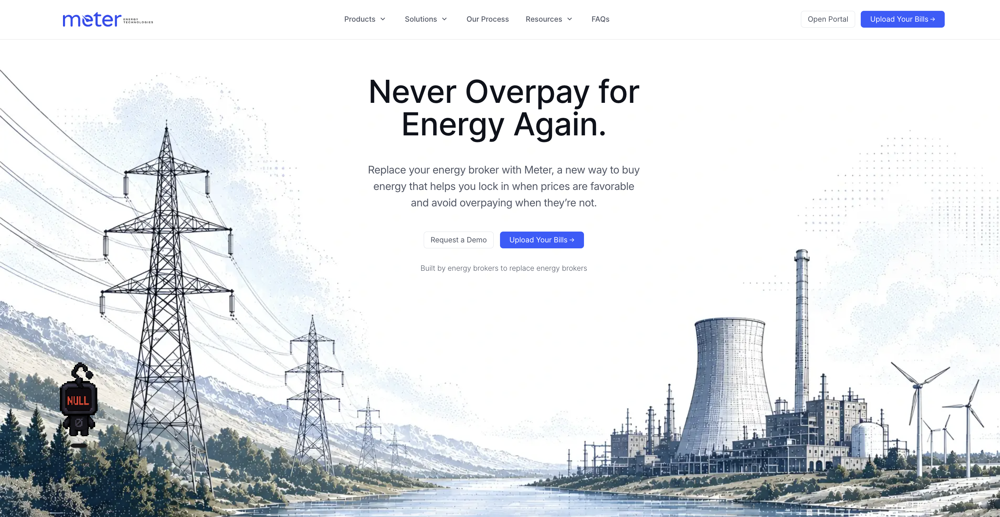
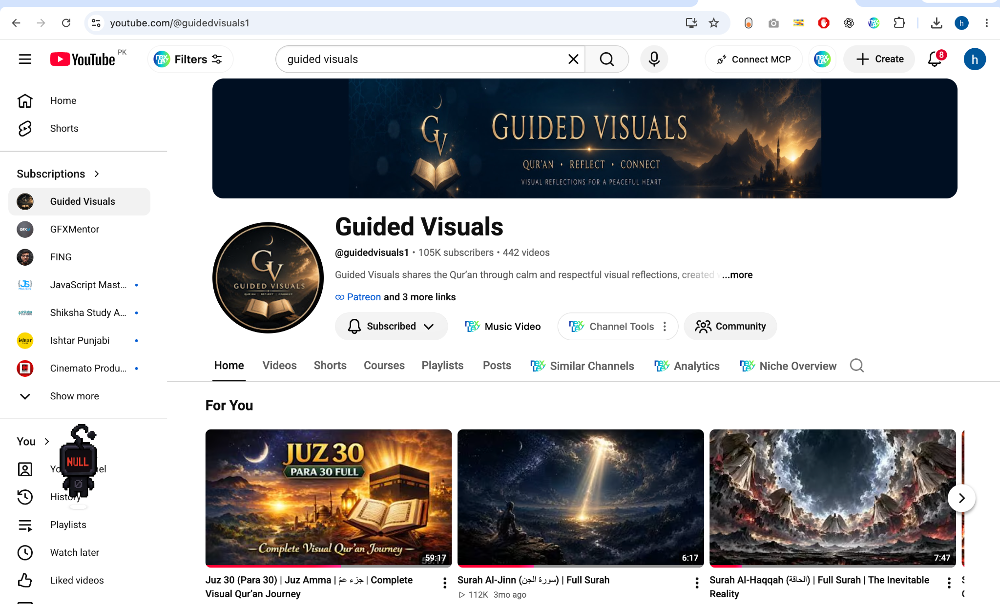

01
Professional experience
OBS Technologia
Designer · Since July 2020
01Selected work & product thinking
I turn business problems into clear product decisions, then collaborate closely with developers to ship the experience.
02 A multidisciplinary foundation
I work across product design, visual systems and front-end development, connecting business goals, user experience and implementation.
Islamabad, Pakistan
Professional experience
Designer · Since July 2020
Independent practice / Upwork
Top RatedEducation
BS (Hons) Mass Communication · 2018–2022
03 Selected projects
I move between product thinking, visual systems and implementation, taking the right level of ownership for each problem.
Additional selected work
Primary case study
Lead designer & developer
Marketplace architecture, renter and host journeys, verification, property listings, booking and payments.
Primary case study
Product designer · Developer collaboration
Navigation for a 24K+ product catalog, custom configurators, quote tooling and documented developer handoff.
04 Marketplace overview
Lucky Backyards began as a broken WordPress rental marketplace. The client initially needed location, language and currency support, but the existing foundation could not support the product they were trying to build.
I helped lead the move to a custom implementation, shaping the product experience while collaborating with the development team.
My role
Product
Implementation evidence / Private repository


05 The product constraint
The original WordPress product had fundamental issues across core experiences, including login.
What changed
I repaired critical issues to create a workable WordPress MVP. As requirements expanded, JavaScript became the practical route for the complete renter and host product.
Core product experiences were not functioning reliably.
Inherited constraintCritical issues were repaired to create a workable interim product.
Short-term recoveryA stronger foundation for the full renter and host experience.
Long-term solution06 Product architecture
Lucky Backyards needed separate experiences for renters and hosts, connected through one reliable booking journey.
The challenge was not designing individual screens. It was making every step work as one connected product.
07 Process and implementation
I translated the marketplace requirements into clear flows, reusable interface patterns and implementation-ready decisions.
Mapped renter and host journeys, account states, verification, listings, booking and payment relationships.
Designed responsive screens and reusable Figma patterns across both connected user journeys.
Worked closely with the team while leading design and contributing directly to the custom JavaScript front end.
Tested responsive behavior, refined key interactions and delivered the completed product to the client.
Design decisions stayed connected to implementation, so the experience could move from flows to a functional product.
08 Outcome and reflection
The project moved from a broken WordPress experience to a custom product supporting the complete renter and host journey.
The engagement is complete, and the client is now marketing the platform.
The result was more than a visual redesign. It was a stronger product foundation shaped through design, technical decisions and close collaboration.
09 Commerce at catalogue scale
A large Shopify commerce platform with more than 24,000 products, complex technical categories and custom purchasing tools.
Make a highly specialised catalogue easier to explore, configure and purchase without removing the detail professional customers need.
Large-scale category architecture and product discovery.
Custom cap and chase-cover product tools.
A structured quote-building experience for complex orders.
Responsive systems and documented developer decisions.
I was responsible for the product design across Copperfield and worked closely with developers on product synchronisation, implementation and experience refinement.
Design leadership and implementation collaboration. No claim of ownership over the entire codebase.
10 Scale and complexity
The challenge was not simply the number of products. It was the relationship between technical categories, product specifications, purchasing paths and synchronised commerce data.
Thousands of specialised products across technical categories and subcategories.
Customers needed to find exact items without losing essential technical detail.
The experience worked with Shopify product synchronisation and implementation structure.
Direct purchase, product configuration and quote-building each required clear routes.
Reduce the feeling of complexity without removing the technical depth customers relied on.
Supporting evidence
These selected views support my implementation collaboration and contributor context without suggesting ownership of the wider private codebase.


11 Complex product UX
Custom tools were required for products that could not be handled through a standard Shopify product page.
Guided selection through clear product choices and technical options.
A structured flow for defining required specifications before purchase.
A dedicated path for complex orders requiring details beyond immediate checkout.

Mapped each decision point, organised options into logical stages, designed reusable interaction patterns and documented required states in Figma.
The interface translated complex product rules into guided experiences customers could understand and developers could implement.
12 Figma systems and developer handoff
Complex states, responsive behavior and technical rules needed enough clarity to move accurately from Figma into implementation.
Main website, components, configurators, quote tool and responsive layouts.
Consistent patterns for navigation, products, forms, selections and purchasing states.
Decision logic, validation, responsive references and expected outcomes.
Implementation questions, technical constraints, review and experience refinement.


The goal was not to hand over static screens. It was to give developers enough clarity to build the intended product behavior.
Design system, product UX and detailed handoff, with close implementation collaboration and no claim of ownership over the entire codebase.13 Final work and reflection
A connected design system covering catalogue discovery, technical products, custom configuration, quoting and responsive purchasing experiences.
Navigation, product pages and reusable patterns designed to work across thousands of specialised products.
Configurators and quoting journeys turned technical product decisions into guided customer experiences.
Detailed Figma documentation and close developer communication supported the product through build and refinement.
Copperfield demonstrates how I approach product design: understand the business and technical complexity, create a clear system, and stay involved until the experience becomes functional.
Product design leadership, reusable Figma systems and close implementation collaboration.14 Selected work
Beyond the two deep dives, I have designed and built products across gaming, community platforms and modern web experiences.

A complete redesign of a gaming rewards and community platform.

A recent website project where I designed and developed the complete front end.
The same product thinking adapts across industries, from structured UX systems to polished production-ready interfaces.
15 Motion and storytelling
Alongside product design, I independently create animation, motion work and meaning-led visual storytelling.

105KSubscribers
442Videos
SilverPlay Button
An organic viral visual-storytelling piece combining clear Qur’anic meaning with emotionally focused animation.
Animation, editing, visual design and storytelling shaped for different platforms.
Whether designing a product or directing a visual story, the goal is the same: make complex ideas clear, intentional and memorable.
16 Closing
From understanding the business problem to shaping the experience and collaborating through implementation, I stay involved until the work becomes a functional product.